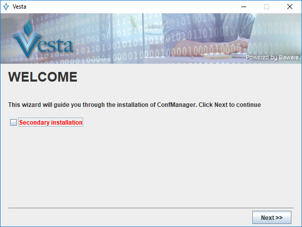
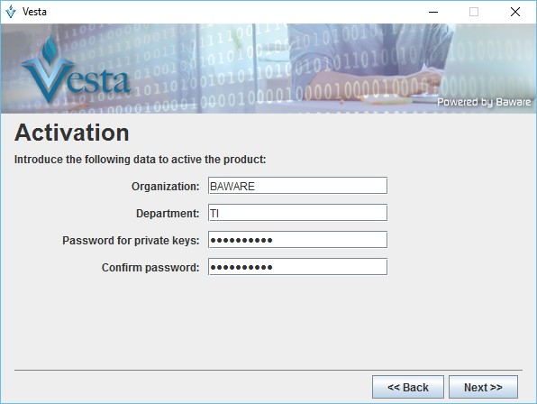
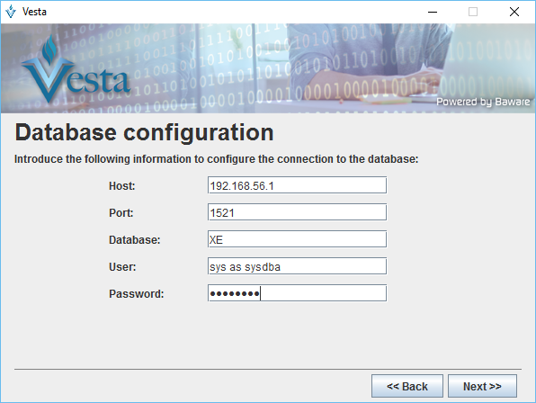
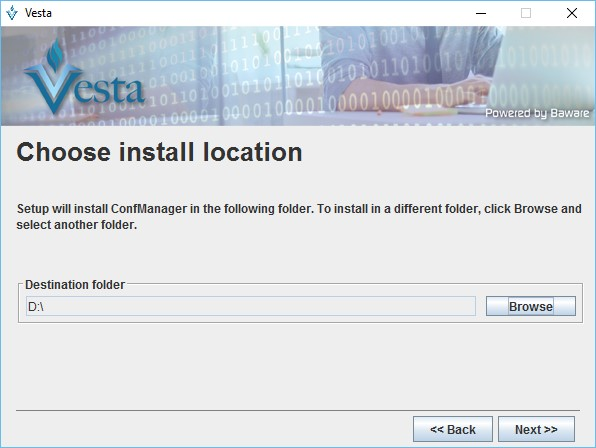
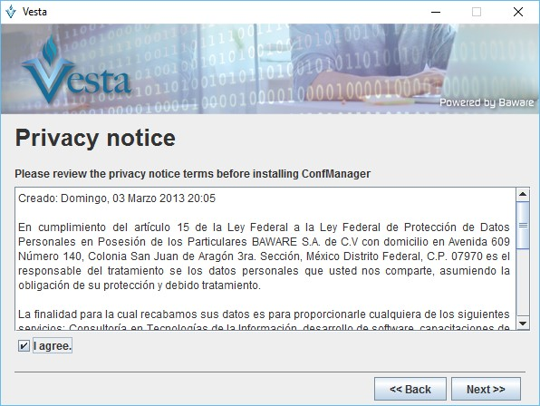
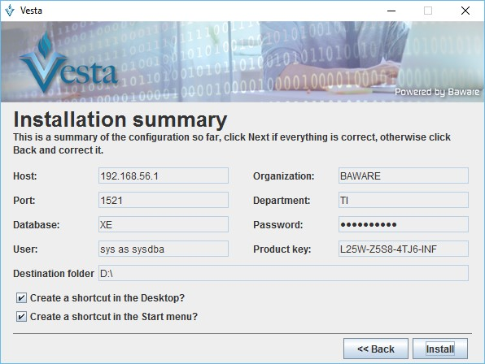
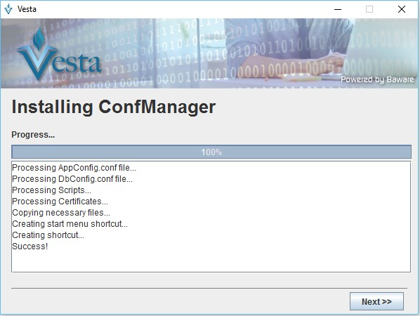
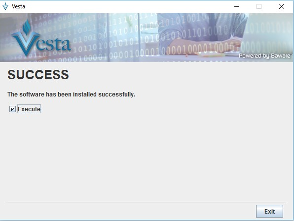

Instalación de Vesta
Para que Vesta pueda funcionar correctamente en el equipo, es necesario que consulte los requisitos que debe cumplir el sistema.
Instalación
Una vez que se han cubierto los requisitos previos a la instalación del producto, se procede con la instalación.
1. Descomprimir
Para poder instalar Vesta, se debe obtener el archivo “.zip” proveniente del repositorio oficial del producto (AQUI AUN FALTA ESPECIFICAR DE DONDE SE OBTEDRA EL PRODUCTO). La carpeta contiene los archivos necesarios para el proceso de instalación del producto. Una vez descargado el archivo se procede a extraerlo:

2. Ejecutar
Con los archivos completos, se procede a instalar Vesta. La siguiente pantalla muestra la selección del archivo run.bat o run.sh dependiendo la plataforma de sistema operativo En Microsoft Windows, se ejecuta el comando run.bat, si corresponde a Linux ejecutamos run.sh
Right Click > run.bat > Ejecutar como administrador

Nota: Los accesos directos de la aplicación son creados de manera automática cuando los instaladores son ejecutados con privilegios de administrador.
3. Instalando
Una vez ejecutado el comando, se muestra el asistente de instalación:

Donde:
Principal(Default): El repositorio de metadatos del producto es creado e inicializado. Este tipo de instalación es conocido como instalación primaria.
Secundaria: En este tipo de instalación, el producto es configurado en un repositorio de metadatos existente.
De manera predeterminada la instalación se realiza de modo principal.
Damos click en el botón “Next”
4. Datos de la organización
El primer paso es ingresar los datos de la organización:

-
Organización: Nombre de la organización donde se instalará Vesta.
-
Departamento: Departamento dentro de la organización al cual pertenece la aplicación.
-
Product Key: Clave de la licencia de uso para la aplicación.
Al ingresar la clave del producto automáticamente se valida que sea correcta y pedirá establecer el password de la instalación.
- Password for private keys: Password del usuario principal de la aplicación, servirá para autenticarse por primera vez en la aplicación, además servirá para generación de llaves de cifrado para almacenar datos sensibles en Vesta.
Los datos a ingresados son a modo de ejemplo, se debe cambiar por la información real.
Se continua con el asistente de instalación, se da click al botón Next.
5. Configuración a la base de datos
Se procede a ingresar los datos de acceso a la base de datos para su configuración. La base de datos contendrá el repositorio de metadatos de la aplicación. Los datos ingresados durante el uso de Vesta serán encriptados y almacenados de manera segura por la aplicación.

- Host: IP del servidor de base de datos.
- Port: Puerto de escucha del servidor de base de datos o el listener asociado.
- Database: Nombre de la instancia de base de datos o service name.
- User: Usuario de acceso a la base de datos.
- Password: Contraseña del usuario de base de datos.
Nota: El usuario ingresado en el campo “User” deberá contar con los permisos necesarios para la creación de objetos dentro de la base de datos. Cualquier usuario de base de datos podrá ser utilizado siempre que cumpla con este criterio.
6. Directorio de instalación
Se debe seleccionar el directorio de instalación denominado “VESTA_HOME”. Se puede elegir la ubicación que mejor sea considerada.

Una vez que se eligió la ubicación, se da click al botón Next para continuar con la instalación.
7. Aviso de privacidad
Para continuar con la instalación del producto se debe aceptar el Aviso de privacidad y dar click al botón Next.

8. Resumen de la instalación
Una vez que se ingreso la información solicitada, muestra el resumen de los datos:

Se valida la información, si es correcta se continua con la instalación, si es incorrecta se puede retroceder a modificarla con el botón Back.
9. Instalación de componentes.
Comprobada la información se procede a instalar la aplicación con las configuraciones ingresadas en el asistente de instalación.

Completado proceso al 100 %, se da click al botón Next.
10. Fin de la instalación.
Finalizado el proceso de instalación, se procede a ejecutar la aplicación:

Nota: Durante el proceso de instalación es creado el usuario “admin”. Este usuario es creado automáticamente con los permisos necesarios para operar la aplicación.